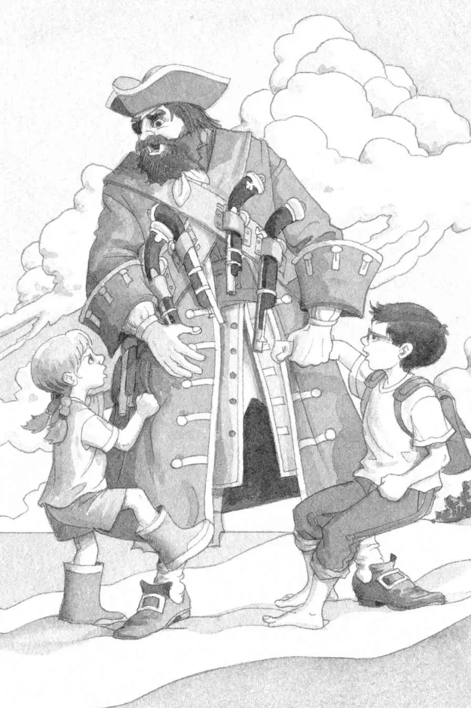
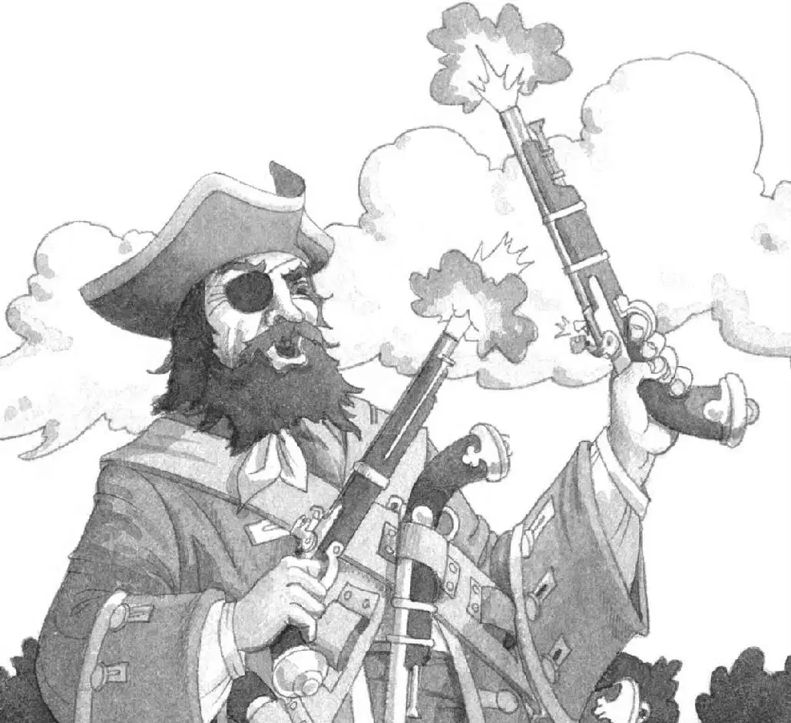

杰克在滚烫的沙滩上以自己最快的速度拼命奔跑。
可是那几个海盗跑得比他还快。
没等杰克反应过来，那个块头最大的海盗就抓住了他。
杰克拼命挣扎，可海盗的胳膊太粗壮有力了。他紧紧抓着杰克，发出邪恶而刺耳的笑声。他脸上留着乱蓬蓬的黑胡子，一只眼睛上戴着眼罩。
杰克听见安妮在叫，随即便看见她顺着绳梯爬下了树。
“待着别动！”杰克喊道。
可是安妮还是跑了过来，她边跑边嚷：“放开他，你这个坏蛋！”
另外两个海盗恶狠狠地大笑着。他们身上脏兮兮的，头发和胡子蓬乱地缠在一起。
安妮冲向块头最大的那个海盗。
“放开他！”安妮一边喊，一边对海盗拳打脚踢。
大块头海盗发出一声低沉的吼叫，然后一只手一把将安妮拎了起来。他的另一只大手揪着杰克，就好像他俩是他的小猫咪。

“谁也别想从骷髅船长手里逃脱！”大块头海盗咆哮道。他的喘气声真吓人。
“放开我！”安妮冲着他的脸嚷道。
骷髅船长微微一笑，露出黑色的牙齿。
安妮不说话了。
骷髅船长哈哈大笑，然后转向另外两个海盗，说：“你们这些赖狗，去看看他们屋里有什么。”
“遵命，船长！”另外两个海盗回答。
他们抓住绳梯，爬进了树屋。
“发现了什么，红毛？”骷髅船长喊道。
“书，船长！”红毛从上面往下喊。
“什么？书？”骷髅船长往沙滩上吐了口唾沫吼道，“我要的是金子，你们这些赖狗！”
“狗都比你强。”安妮冲骷髅船长叫道。
“嘘。”杰克小声说。
“你呢，臭货？发现了什么？”骷髅船长喊道。
“除了书还是书，船长！”臭货回答。
“哼，书。”骷髅船长又往沙滩上吐了口唾沫说，“我讨厌书！继续找，你们这两条赖狗！给我找出点儿好东西来！”
骷髅船长一把抓起杰克的背包，大声地问道：“这里面有什么？”
“没什么……”杰克赶紧把背包打开说，“就是纸、笔和一本书。”
“又是书！”骷髅船长大吼一声，“倒霉的赃物！”
一声狂喜的尖叫划破了空气。
骷髅船长怔了片刻，咆哮着问：“怎么回事？”
“快看，船长！看！”
红毛从树屋的窗口探出头来，他手里举着金勋章，勋章在阳光下闪闪发亮。
“糟糕。”杰克想。
“把它扔下来！”骷髅船长大声喊。
“那不是你的东西！”安妮叫道。
骷髅船长松开杰克和安妮，一把抓住落下来的勋章。
“金子！金子！金子！”骷髅船长说着把脑袋往后一仰，发出狰狞而可怕的笑声。
他高兴地抓起他的两把手枪，朝空中射击。
红毛和臭货发出了野狼般的嗥叫声。
